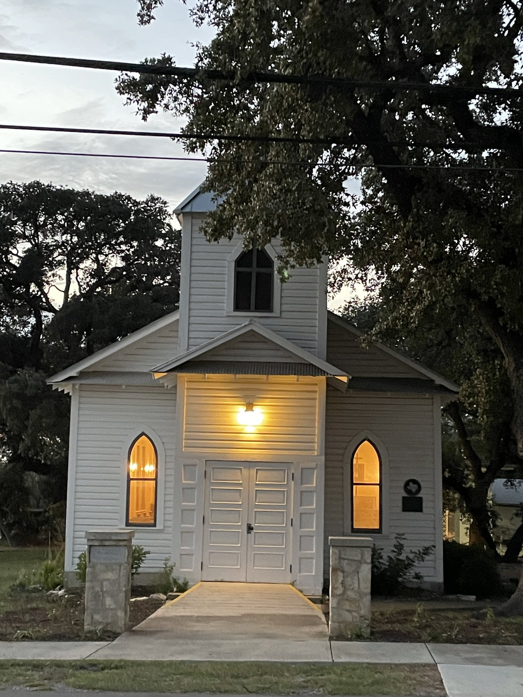
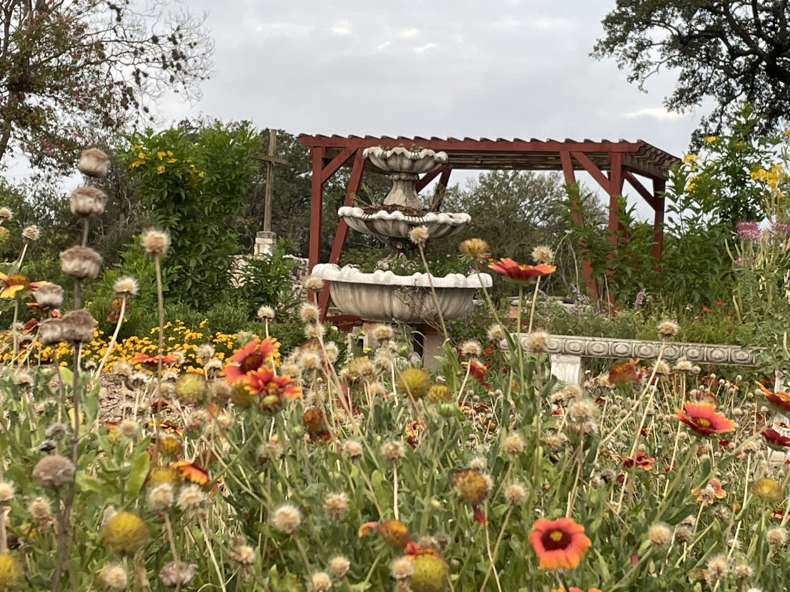
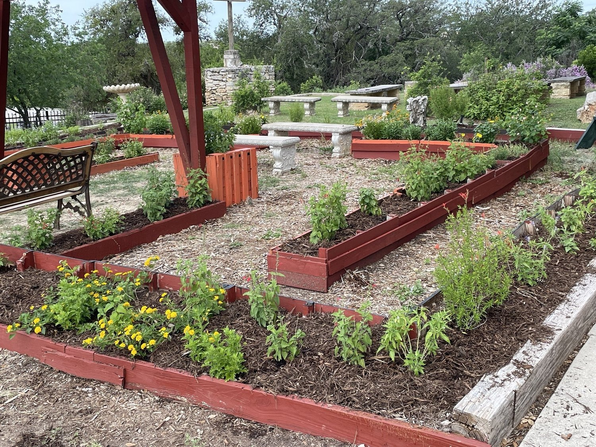
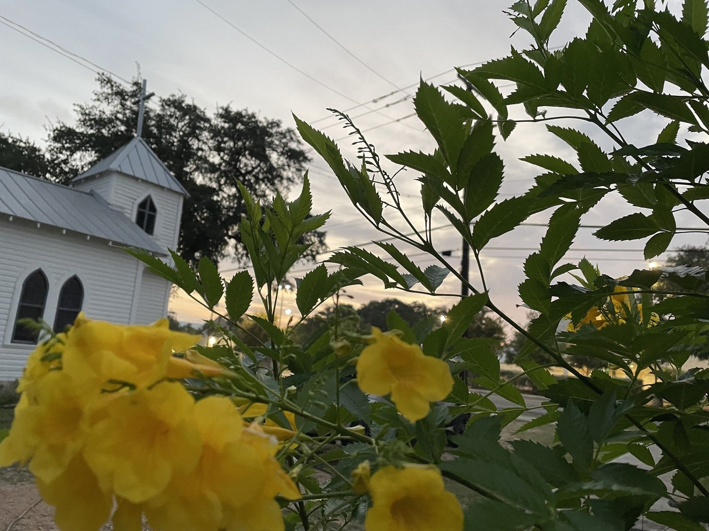
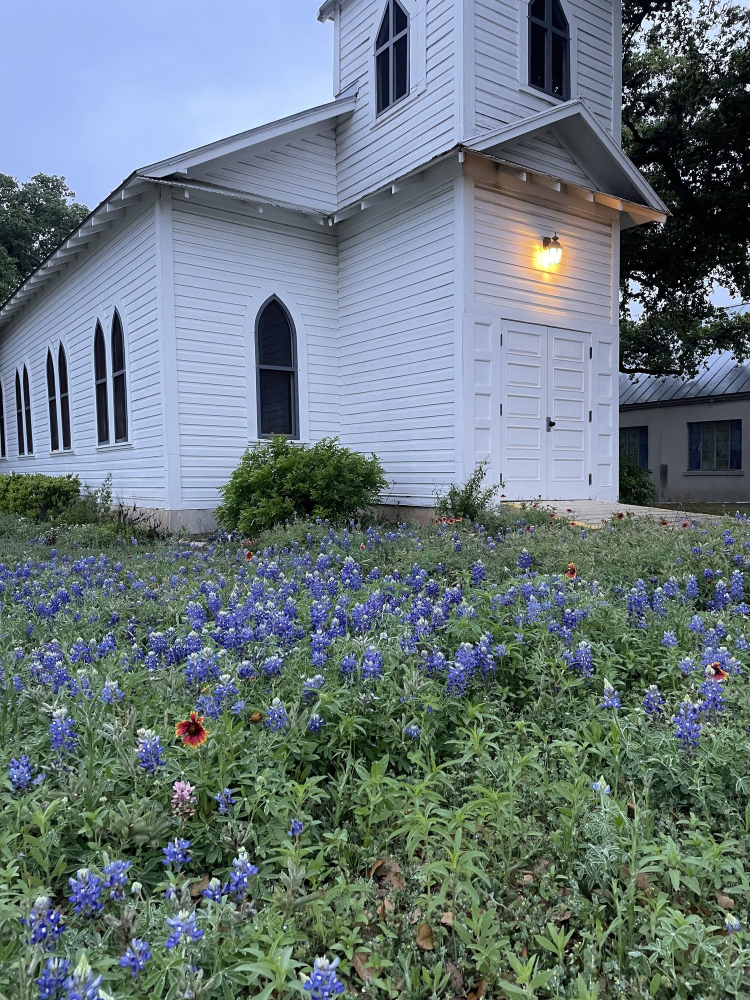

The Gardens at the Historic Chapel
Part of the challenge for me in designing The Chapel Gardens was to honor the early pioneers. In 1904, as they rode their horses and buggies down the dirt roads to this magnificent church on a hill, what plants would they have seen? Which vegetables were growing in their modest gardens? What flowers made up the simplest bouquets as brides walked down the aisle of this sanctuary in the country?
For most, the church was their spiritual origination and the cemetery down the hill was their earthly destination. Life was lived in the in-between.
How do you design for that?
The in-between is a garden where children learn; it’s a fountain garden inspired by Monet; and it’s a labyrinth—an ancient spiritual practice for settling oneself in life’s uncertainties.





Gardening based on good practices: right soil- right plant-right location, correct watering